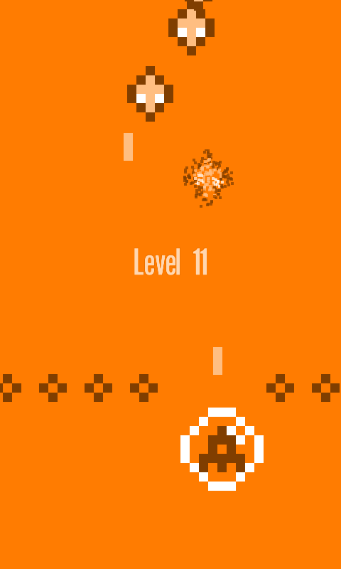
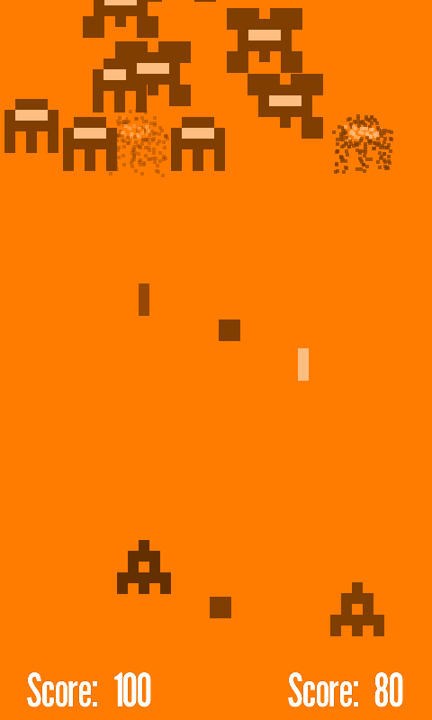
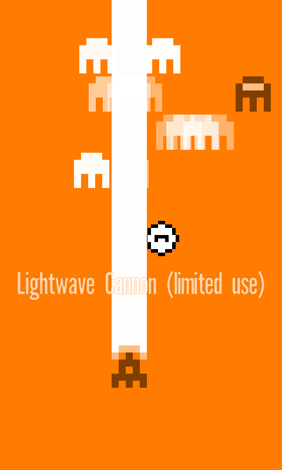

A Two Player Adventure for the Windows Phone 7
SPACE OCTOPUS MONO is a game for ONE OR TWO PLAYERS in which the participants attack and destroy a myriad of EXOTIC CREATURES. The discerning player may collect POWERFUL UPGRADES as they progress through SPECIAL STAGES and defeat increasingly dangerous invaders. We humbly invite all of the gentry and general public who possess a WINDOWS PHONE 7 mobile device to receive and enjoy a FREE TRIAL of no less than 30 LEVELS OF THE FULL GAME.
  COPYRIGHT © 2010 NEW NORTH ROAD